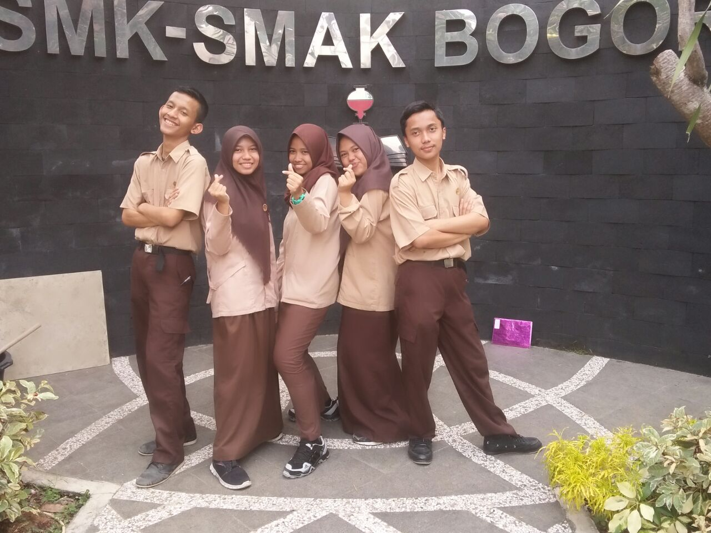

Nama Saya Nurul Bunga Kurnia, 17 tahun. Panggil saja Bunga , tapi kalau mau panggil Cantik juga ga papa,hehe. Saya lahir di Bogor, 5 Februari 2001. udah lewat nih ultah saya, tapi kalau mau kirim kado,silahkan hubungi nomer di bawah ini. Warna kesukaan saya Putih,Idola saya banyak,salah satunya pasti ibu saya sih .Apalagi ya ? Sifat saya ?ga usah ditanya ya, abisnya saya rusuh sama bawel, tai ga separah itu ko wkwkwk
Disni semoga saja saya tidak curhat, tapi sesuai dengan tugas yang diberikan oleh Pihak Sekolah . Oke back to the topic , disini saya akan meyebutkan hobi hobi saya, sebenernya hobi saya itu banyak banget, tapi karena ketentuan, kayaknya saya ga bisa kasih tau semua hobi saya,yang saya tulis itu cuma hobi yang aga bagus,kalo hobi yang biasa aja, yaa...kaya semua cewek cewek kebanyak kayak,makan,Tidur, Nonton Drakor apalagi ya ? mungkin kalo mau tau hobi saya yang lain bisa follow akun Instagram saya @nbunganurul
Membaca Novel
Ikut Berorganisasi, ini hobi bukan si ?.
Mendengarkan Musik dan Bernanyi
Note:, Please ga usah tanya suara saya bagus atau tidak

Sebenernya saya masih kurang tau ini hobi apa bukan,tapi karena saya sudah ikut organisasi dari SMP, secara gasadar Organisasi ini udah jadi Keluarga Saya diatas,saya udah nulis ini bukan tempat Curhat, so.. disini saya ga bakal curhat tapi cerita..iya ga ? iyain aja ya..ini juga Website saya hehe.. Jadi Pertama kali saya ikut organisasi itu OSIS waktu SMP kelas 7,dulunya.. waktu jaman jahiliyah (red-SD) saya itu orangnya pemalu sama penakut,sekarng juga sih..Tapi ga tau kenapa waktu itu saya malah daftar OSIS, dan entah keajaiban dari mana ,saya keterima, padahal menurut saya, banyak temen saya yang lebih pantes dari saya, tapi saya bersyukur banget sih saya yang keterima hehe.. awalnya berat sih jadi osis, apalagi waktu itu kakak kelas saya bawel banget, jadilah saya dimarahin tiap hari karena masih malu negur kakak kelas yang ngelanggar , awalnya saya takut,capek,sampe males buat ikut kumpul osis itu karena takut dimarahin, Tapi lambat laun saya nyaman, saya udah bisa negur kakak kelas yang ngelanggar peraturan, saya udah biasa di marahin kakak kakak osis saya yang bawel gitu, danga tau kenapa.. saya udah cinta sama suasana OSIS nya :) Sekarang, di SMA ( saya SMK sih sebenernya ) saya uda punya banyak keluarga, sekarang saya ikut PP atau OSIS gitu , saya juga ikut PASUS /Pasukan Khusus